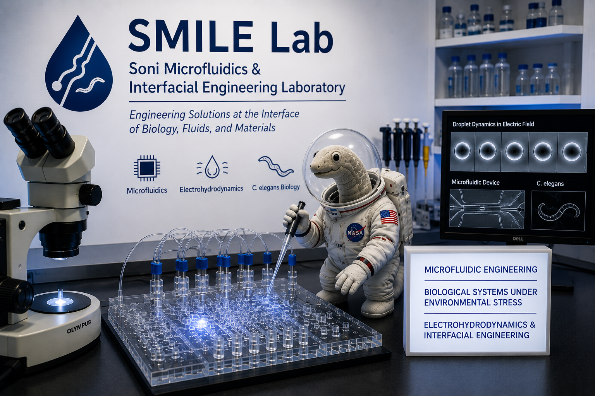

SMILE Lab
Engineering technologies for human health, environmental sustainability, and fundamental fluid science.
Developing tools to understand complex biological and fluid systems.
The SMILE Lab develops innovative engineering technologies to investigate biological systems, understand complex fluid phenomena, and address challenges in human health and environmental sustainability. By integrating microfluidic engineering, interfacial science, and quantitative experimentation, we create next-generation tools that enable scientific discovery across disciplines.
As part of Marian University's E. S. Witchger School of Engineering, we are committed to providing meaningful undergraduate research experiences while fostering innovation through interdisciplinary collaboration.
Three connected directions.
Microfluidic Engineering
Engineering miniaturized technologies for quantitative biological experimentation.
Biological Systems Under Environmental Stress
Understanding how biological systems respond to environmental and physical stressors.
Electrohydrodynamics & Interfacial Engineering
Exploring droplets, emulsions, and fluid interfaces under electric fields.
Where engineering meets discovery.
Microfluidics in Space
Engineering microfluidic technologies for biological research aboard the International Space Station.
Healthy Aging & Environmental Toxicology
Developing high-throughput platforms to understand how environmental stressors influence organismal health.
Droplets & Electric Fields
Understanding the dynamics of droplets and emulsions through electrohydrodynamics and interfacial engineering.
Discovery happens where disciplines meet.
Our laboratory brings together engineering, biology, chemistry, and fluid mechanics to develop technologies that improve our understanding of health, environmental systems, and complex fluids. By combining fundamental engineering principles with real-world applications, we prepare students to become innovative problem-solvers and future leaders.
Interested in undergraduate research?
The SMILE Lab welcomes motivated students interested in hands-on engineering research.
Explore Opportunities